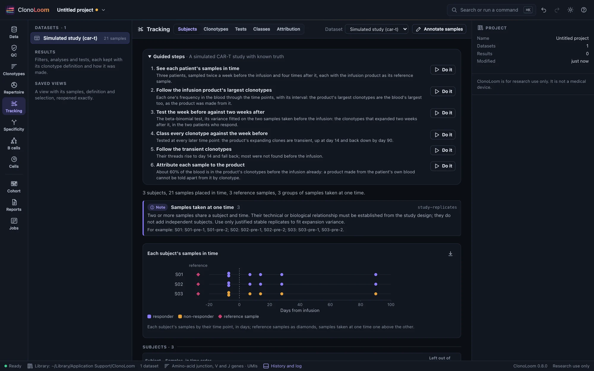
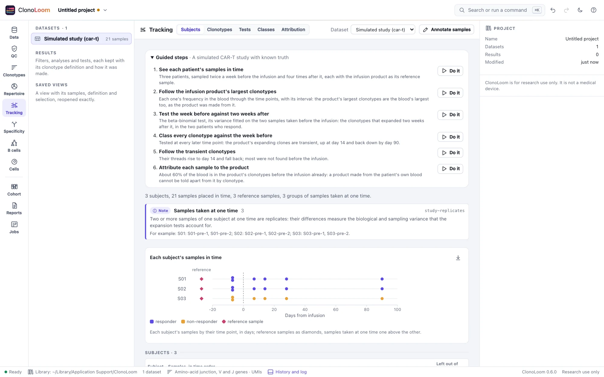
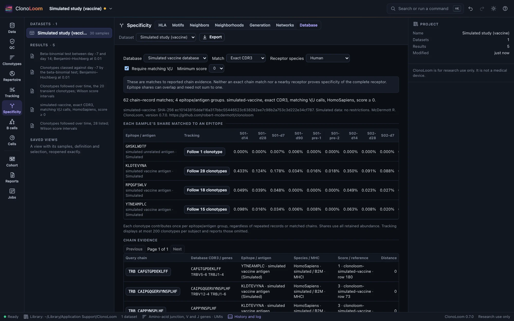
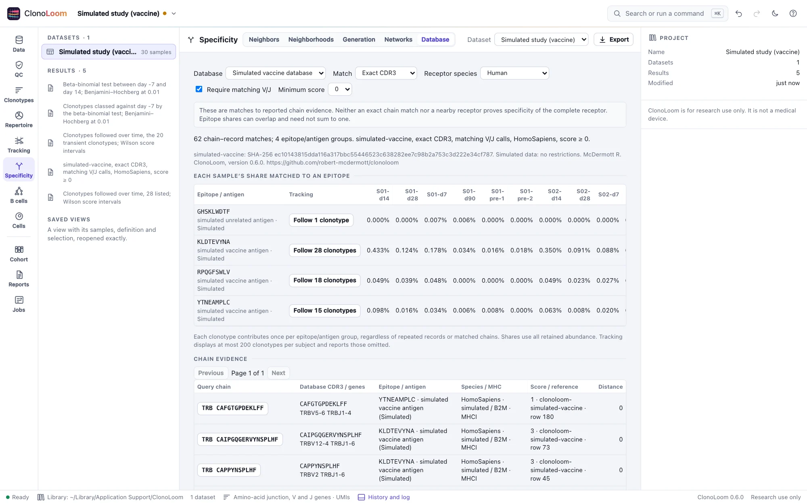

Simulated studies
ClonoLoom makes bulk T-cell receptor β studies whose truth is known: every clonotype of every subject, and the numbers an analysis estimates. They are for checking methods, ClonoLoom's or anyone's, against the truth, and for learning ClonoLoom without data of your own.
Make one
The Example data dialog offers five studies, made on your computer in a few seconds (offline too), each labeled simulated wherever it is shown. From the terminal:
$ clonoloom simulate # the standard study, into clonoloom-simulated-standard
$ clonoloom simulate --preset null --seed 7 # another study, another seed
$ clonoloom simulate --print-params > study.json # the parameters, to edit
$ clonoloom simulate --params study.json --out my-studyThe same parameters and seed give the same study, byte for byte, on every computer. Open its folder in ClonoLoom as one dataset: its truth folder, and the vaccination study's database folder, are left out.
Presets
| Preset | Subjects | Samples | What it is for |
|---|---|---|---|
standard | 3 control, 3 with expanded clones (fewer clonotypes, a heavier tail, five clones holding 22% of the cells) | 2 of each subject, 12,000 to 45,000 templates | Diversity, rarefaction and overlap, with a real difference between the groups |
null | 6 of one kind, in two groups | 2 of each | A comparison of the groups should find nothing |
small | 2 | 1 of each | Tests |
car-t | 2 responders, 1 non-responder | A week before infusion (twice), days 7, 14, 28 and 90, and the infusion product | Tracking, expansion tests and attribution after a CAR-T infusion |
transplant | 3 recipients, 1 with graft-versus-host disease | Before the transplant, days 30, 100 and 365 (twice), and the donor's blood | Tracking and attribution to a donor |
null-series | 4 of one kind | Days 0, 14 and 28, twice each | Expansion tests should find nothing |
vaccine | 3 vaccinated, 2 given a placebo | A week before the vaccination (twice), days 7, 14, 28 and 90 | Receptors of known specificity: similar receptors, their expansion, and matching to a specificity database |
Studies over time
The car-t, transplant and null-series presets sample each subject at several time points, in days from its reference event, and the Example data dialog offers the first two. Between time points, classes of clones follow known trajectories: in the CAR-T study, 2% of the product's clones expand after the infusion and 20% contract. A reference population is mixed into the blood in a known share at each time point: an infusion product, made from cells collected from the subject's own blood and expanded ex vivo, or a donor's repertoire. It is sampled once as the subject's reference sample, whose tissue (infusion product, donor blood) marks it as the reference in the Tracking view. Every sample, replicates at one time included, draws each clone around its expected frequency with biological variance, so that two samples of one subject differ by more than sampling, as blood samples do; the replicates measure it.


The truth adds each sample's day, the reference's expected share of its cells, and the expected share of its cells in the reference's clonotypes. Because a product is made from the subject's own cells, about three quarters of the blood is in its clonotypes even before the infusion. For each subject, a file gives every clonotype's trajectory and expected frequency at each time point.
Receptors of known specificity
The vaccine preset adds an antigen-specific response to a study over time: receptors that recognize three epitopes of a vaccine (peptides made up for it). Each epitope has founders, rearrangements the subjects share as public receptors do; each subject holds a family of each founder, receptors of the founder's genes and deletions whose non-templated nucleotides differ, so that their CDR3s differ by a residue or two, mostly ones alike; and receptors of its own, unlike any other. Pooled across subjects, 58% of these receptors have another of the same epitope within 12 TCRdist units and 63% within 24, as Dash et al. 2017 found in mice and people (54–61% and 59–71%). They are 0.1% of the blood before the vaccination, rise to 3% at day 14 in the vaccinated and fall back, and stay at 0.1% in the placebo group.
The truth gives every subject's receptors that recognize an epitope, with the epitope and founder (any other clonotype recognizes none), and each subject's expected share in them at each time point. Beside the samples, database/vdjdb.txt is a specificity database in VDJdb's format: each epitope's founders and receptors of other donors around them, with two epitopes no subject responds to.
The truth
Beside the samples (AIRR rearrangement tables, templates as umi_count and reads as duplicate_count, with their Repertoire metadata), the truth folder holds every clone of every subject's population, and for each population its clonotypes, Hill numbers, Shannon and Simpson indices, evenness, clonality, Gini, largest clones' share and homeostasis; for each sample, the clonotypes and coverage a sample of its depth shows on average; and for each pair of subjects, the clonotypes they share. ClonoLoom's own interval coverage is measured against it (Science).
The model
Rearrangements are made from GRCh38's TRB gene segments at Ensembl's annotation, with the V and J usage of 10x Genomics' 10k PBMC data, deletions, palindromic and non-templated insertions, and productive junctions selected on their length so that their lengths are the data's. Each subject's clones have power-law sizes; each sample draws templates from them and sequences them into reads. It is a simple, documented model for testing methods against a known truth, not a model inferred from data: its junctions look like real ones, but they are not a substitute for real repertoires. SIMULATION.md gives every file, field and parameter. Simulated data describe no person, and may be used and shared without restriction.
Work through the specificity examples


Generate A simulated vaccination study with known specificities in Examples. Its six steps show subjects, test the week before against day 14, class transient clonotypes, follow them, match the generated database by exact CDR3 and V/J, then follow a matched vaccine epitope. The database is intentionally incomplete: the matching receptors represent only part of the simulated response, and some chance matches remain.
The Epitope-specific TCRs of Dash et al. 2017 example has two steps for each of its mouse and human openings: compare paired CDR3s at TCRdist 24 and connect all-chain matches into a network. Samples retain the known tetramer epitope and donor. The steps explicitly compare CDR3s alone, so they need no separate reference download. To include V-gene loops, download them in Reference data and change the comparison. Connected components can span distant endpoints through intermediate receptors; inspect the epitope labels rather than treating a component as proof of shared specificity.